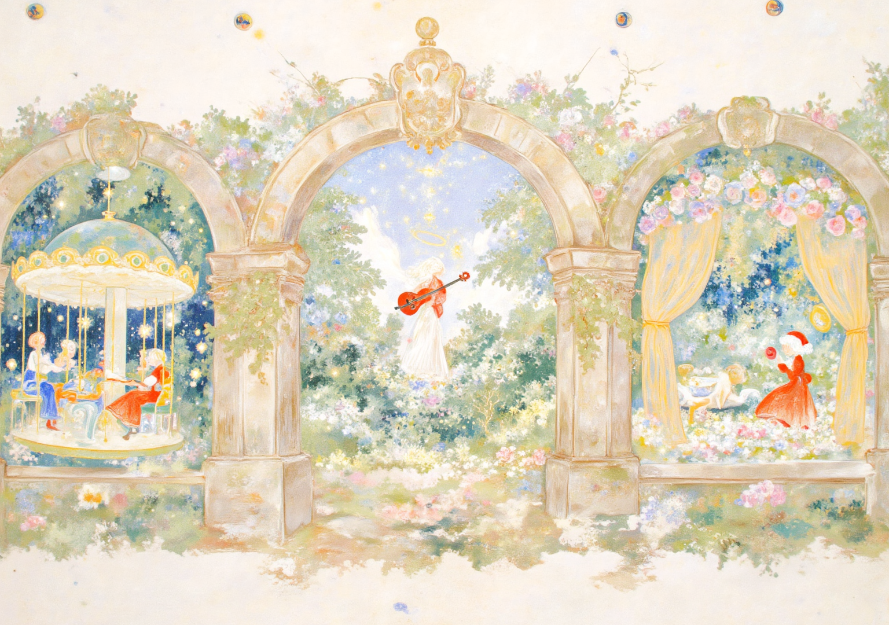
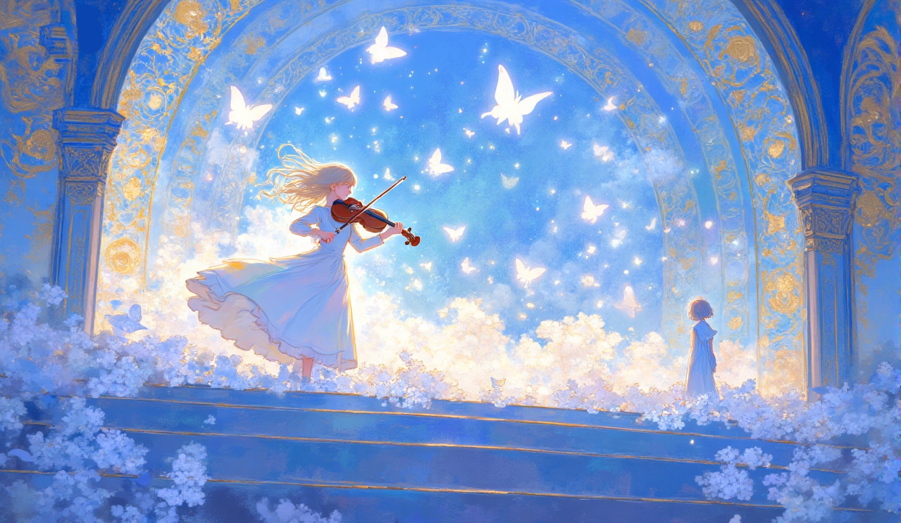

1
核心创新体验
手势识别交互：基于MediaPipe Hands实时捕捉手部21个骨骼节点，识别握拳、张开、双手合十等手势，无需接触屏幕即可完成所有操作。
三层叙事结构：视觉（旋转木马拼图）、听觉（小提琴安眠曲）、心觉（孔明灯许愿），对应梦境修复的三重感知。
画卷式主页：全景横向卷轴浏览，三区域对应三个关卡，模拟翻阅古老画卷的沉浸体验。
实时视觉反馈：流体波纹、星光粒子、金色光晕、琴弦振动等效果，每个交互都有丰富的视觉回应。
2
交互体验流程
进入梦境 → 纯白叙事页自动播放故事
↓
故事解读信纸 → 点击/握拳收下
↓
画卷主页 → 张开手滑动浏览三区域
↓
选定关卡 → 单手握拳进入对应篇章
↓
🎠 第一章 抓取拖拽拼合旋转木马
🎻 第二章 拂过琴弦弹奏安眠曲
🏮 第三章 双手合十许愿点亮孔明灯
↓
三关完成 → 结局信纸浮现 → 返回梦开始的地方
3
核心界面展示

开篇叙事
开篇 · 底图信纸

画卷主页
画卷 · 三关探索

旋转木马
第一章 · 拼图归位

静默音符
第二章 · 琴弦弹奏
4
使用场景
🏛️
艺术展览
作为交互装置在展厅中供观众体验，摄像头捕捉手势，大屏展示梦境世界
作为交互装置在展厅中供观众体验，摄像头捕捉手势，大屏展示梦境世界
💻
个人电脑
打开网页即可体验完整交互，支持鼠标拖拽与手势识别双模式
打开网页即可体验完整交互，支持鼠标拖拽与手势识别双模式
📱
平板/手机
触屏滑动浏览画卷，手指拖拽拼图碎片，随时随地进入梦境
触屏滑动浏览画卷，手指拖拽拼图碎片，随时随地进入梦境
🎓
教学演示
展示手势识别技术在艺术创作中的应用，适合数字媒体与交互设计课程
展示手势识别技术在艺术创作中的应用，适合数字媒体与交互设计课程